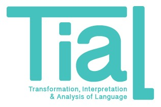

About TIAL

Transformation, Interpretation and Analysis of Language (TIAL) Group is one of three groups in the Signal, Speech and Language Interpretation (SSLI) Lab, founded in 1999. The TIAL Group is interested in developing computational models of language to solve the challenging problems in speech and language interpretation and analysis. Our emphasis is on data-driven machine learning combined with linguistically motivated system architectures.
News
TBD
Research
- Dynamic statistical models for speech and language processing.
- Modeling uncertainty and leveraging structure in speech (e.g. segmentation, prominence) in spoken language processing.
- Computational modeling of prosody.
- Language technology for education applications.
- Extracting social information from language.